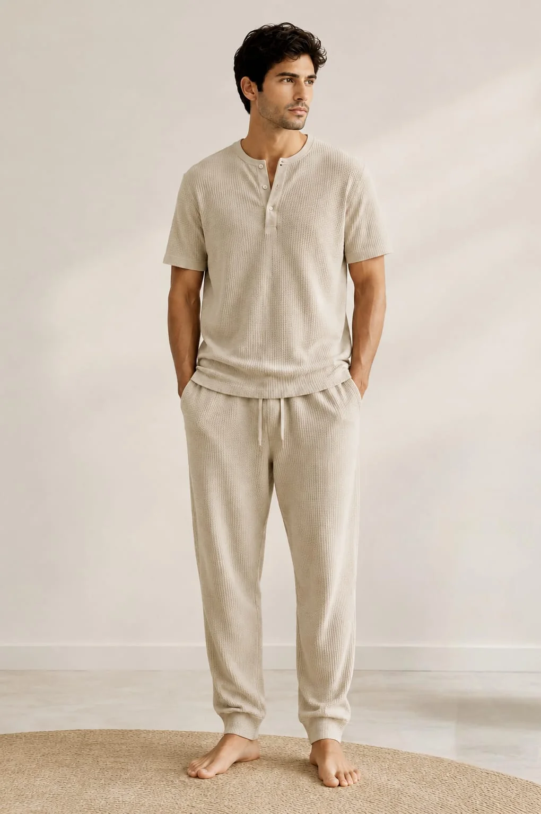

Product development
Translate references, sketches or tech packs into clear development requirements and an approval route.
Tirupur apparel sourcing
2D Creation helps international fashion brands, retailers and apparel buyers source garments from Tirupur, India. We coordinate product development, fabric and trims, sampling, production, quality follow-up and shipment readiness around your brief.
Share your garment references, quantities and delivery requirements. We help clarify the specifications and approvals needed to move your range from first sample to shipment.

Service scope
The exact service plan is defined around the product, quantity, market, quality level and delivery requirements shared by the buyer.
Translate references, sketches or tech packs into clear development requirements and an approval route.
Coordinate fabric, trims, colours, finishes and commercial options against the intended product and target.
Organise sample requests, consolidate comments and track revisions before production decisions are made.
Connect approvals, material readiness, factory planning and milestones through a practical production calendar.
Align checkpoints with approved specifications and communicate issues that need correction or buyer direction.
Coordinate packing information, documentation inputs and final handover requirements before dispatch.
How sourcing moves
Milestones remain visible so decisions can be made before they become production delays.
Clarify product, market, quantity, quality, target and timing.
Identify material, construction, development and capacity considerations.
Coordinate prototypes and revisions against consolidated comments.
Align approved specifications, commercial terms and production inputs.
Track milestones, quality observations and corrective actions.
Confirm final packing, documentation and shipment readiness.
A stronger first brief
Use the checklist to prepare your enquiry. You can start with reference images or sketches if your tech pack is still being developed. Mark undecided details clearly so we can discuss the next questions.
Attach your tech pack or reference file to the quote form. If emailing, attach the file before sending.
Explore next
Common questions
Yes. Share the clearest references you have and identify what still needs development. The team can then explain which specifications are required before sampling or costing.
They depend on fabric, colour, construction, decoration, trims, packaging and total order structure. They are confirmed after the brief is reviewed.
A realistic schedule is prepared after reviewing material availability, sample rounds, approval timing, order quantity and production capacity.
Related article
Practical briefing, sampling and production considerations for your next order.
What you receive
A sourcing service is only useful if you can see what it produces. This is what you should expect to hold at each stage.
| Brief review | A written list of missing specifications, such as measurement points, GSM, trims and packing, before any factory is approached. |
|---|---|
| Factory match | A shortlist of factories that already make your product type, with the reason each one was chosen. |
| Sampling | Consolidated comments for every sample round, and one signed-off reference sample kept as the production standard. |
| Production | A milestone calendar covering fabric, cutting, sewing, finishing and packing, with delays flagged early. |
| Quality | Inspection reports at agreed stages, with photographs, measurements and a pass or fail against the agreed standard. |
| Shipment | Packing details, documentation inputs and a final handover checklist before dispatch. |
Typical first orders are 300 to 500 pieces per style. We work with buyers in the UK, USA, Europe, Australia and other international markets. We reply to new briefs within 1 working day.
Choose the right route
These three are often confused, and the difference decides who is accountable when something goes wrong.
| Sourcing agent | Does not own the factory. Matches your product to a suitable manufacturer and coordinates sampling, production and quality. 2D Creation works as a sourcing agent. |
|---|---|
| Direct factory | Cheapest per unit for large, stable orders, but you manage development, quality and communication yourself. |
| Trading company | Buys and resells. Fast quotes on standard products, but the margin is hidden in the unit price. |
Why a sourcing partner
Tirupur has the knitwear supply chain close together, but a buyer overseas still has to find the right factory, align on a specification and stay on top of production from another time zone. A sourcing partner takes on that coordination.
Your comments, approvals and questions go through one team that consolidates them for each factory, so nothing is lost between sample rounds. Approvals are recorded in writing and the approved sample becomes the production reference.
We source fabric, rib, trims, labels and packing against your tech pack or reference garment, and confirm GSM, composition and finish on a swatch before sampling starts.
A T-shirt programme, a fleece hoodie and a baby bodysuit need different skills and machines. We match each product to a factory that already makes it, with typical first orders of 300 to 500 pieces per style.
Inspections are planned against an agreed AQL standard, and we coordinate packing, documents and freight forwarding, with shipments usually leaving from Tuticorin or Chennai.
Brands building their own label can start with our guide to private-label T-shirt production. For product-specific requirements, see T-shirts and casualwear, hoodies and sweatshirts and womenswear and kidswear.
Guides for buyers
These guides go deeper on the decisions this page summarises.
Share your product type, quantity, destination, references and required date to begin a practical sourcing discussion.